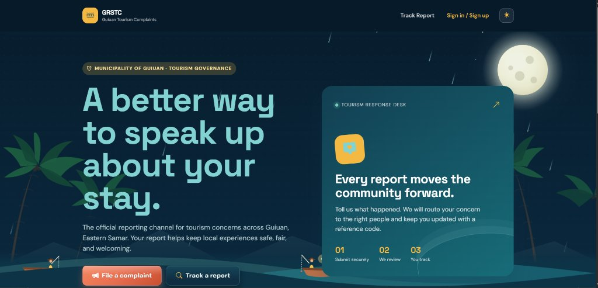
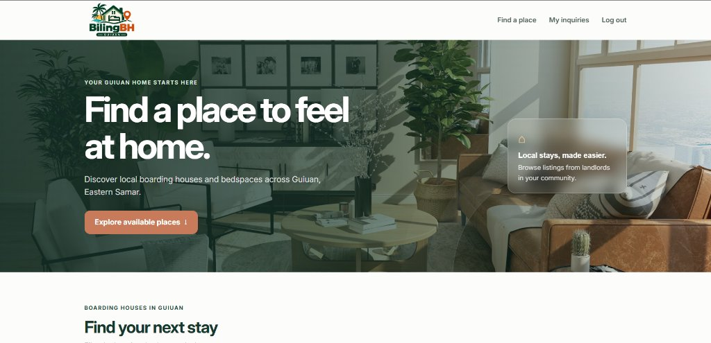
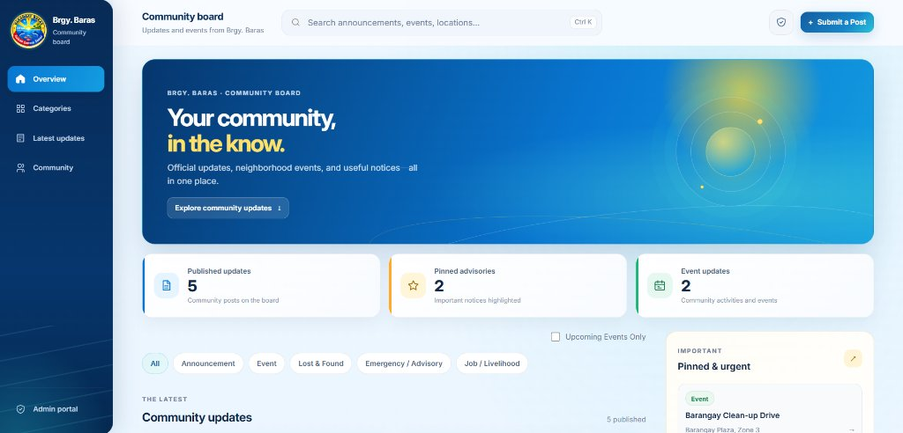

Hi, I'm
Frenz Levi Jan Gagabu-an
Engineering Digital Products With Precision & Academic Rigor.
An Information Technology student at Eastern Samar State University (ESSU) Guiuan Campus. Leveraging a versatile General Academic foundation and scholastic honors, I craft clean, scalable web applications, database architectures, and community-focused web platforms.
Frenz Levi Jan Gagabu-an
BSIT • Eastern Samar State University
Broad Academic Grounding
Formed in the General Academic Strand (GAS) with consistent scholastic honors. Synthesizing multidisciplinary analytical reasoning into modern computing.
BSIT Candidate @ ESSU Guiuan
Building deployed community systems: GRSTC tourist feedback platform, Biling Boarding House finder, and Baras Bulletin.
Gagabu-an, Frenz Levi Jan
Open for tech internships, campus software development, and modern web collaborations.
At a Glance
Structured bento matrix combining my academic grounding at ESSU Guiuan, scholastic distinctions, and technical workflow.
Gagabu-an, Frenz Levi Jan
An Information Technology student at Eastern Samar State University (ESSU) Guiuan Campus. Having graduated With Honors in Senior High School under the General Academic Strand (GAS) as well as With Honors in Junior High School, I also achieved Dean's List recognition in my 3rd year of college while architecting practical web systems and software solutions.
const deployedProjects = [
"https://grstc.free.nf/",
"https://bilingbhguiuan.gt.tc/",
"https://baras-bulletin.gt.tc/",
];
const developer = "Gagabu-an, Frenz Levi Jan";
const status = "Active & Serving Users";
Academic Distinctions
Earned scholastic honors across Junior High School and Senior High School, and achieved Dean's Lister during my 3rd year in college at ESSU Guiuan.
Broad Academic Roots
Grounded in the General Academic Strand (GAS), offering strong critical thinking, research communication, and multi-disciplinary adaptability in tech.
Deployed Production Systems
Developing real, production-ready web portals serving Guiuan residents, boarding house tenants, and regional organizations.
Scholastic dedication.
Driven by software engineering.
Hi, I'm an Information Technology student at Eastern Samar State University (ESSU) Guiuan Campus.
Throughout my academic journey, I have maintained a standard of excellence, graduating With Honors in Junior High School and With Honors in Senior High School under the General Academic Strand (GAS). In my collegiate studies, I managed to achieve Dean's Lister during my 3rd year while pursuing my Bachelor of Science in Information Technology.
My background in the General Academic Strand provided me with a well-rounded foundation in analytical reasoning, research synthesis, and communication. Translating these qualities into IT, I focus on building and deploying live web platforms that address practical institutional, accommodation, and community needs across Guiuan.
Technical & Academic Proficiency
Tools & Technologies
Modern programming languages, frameworks, and deployment tooling used across my live web applications.
Frontend
Crafting sleek, responsive user interfaces and client-side interactions.
Backend & DB
Server logic, relational database models, and RESTful routing.
Networking & IT
LAN configuration, infrastructure setup, and hardware diagnosis.
Dev & Hosting
Live deployment, version control, and design prototyping.
Featured Live Websites
Real production systems engineered and deployed live on the web, serving local communities, student accommodations, and regional institutions.

Live PortalGRSTC — Tourist Feedback Platform
Tourist complaint and feedback platform for Guiuan's food-serving establishments. Tourists submit complaints reviewed by the Guiuan Tourism Office, then forwarded to the reported establishment for resolution.

Live Web AppBiling Boarding House Guiuan
Student boarding house directory and lodging reservation web portal built for ESSU Guiuan students and tenants seeking accommodation around Guiuan, Eastern Samar.

Live CommunityBaras Bulletin
Digital community information and public announcement platform serving Barangay Baras in Guiuan, Eastern Samar. Broadcasts local advisories, barangay notices, and community updates.
Academic Milestones
With Honors in Junior High and Senior High, followed by Dean's List recognition in 3rd year.
Bachelor of Science in Information Technology (BSIT)
Dean's Lister, 3rd Year • 2023 - PresentEastern Samar State University (ESSU) • Guiuan Campus
Developing live web applications serving local users in Guiuan (GRSTC, Biling Boarding House, and Baras Bulletin), with a focus on database management, data structures, and modern web engineering.
Senior High School — General Academic Strand (GAS)
Graduated With HonorsSenior High School • Eastern Samar
Completed the General Academic Strand with recognized academic honors. Gained rigorous training across humanities, social sciences, mathematics, and comprehensive research methodologies that strengthen analytical problem solving in software development.
Junior High School Diploma
Graduated With HonorsJunior High School • Eastern Samar
Consistently recognized on the academic honor roll for scholastic dedication, mathematics, and scientific inquiry, establishing the disciplined work ethic carried forward today.
Let's create something exceptional.
Open for tech internships, campus software development, and web collaborations. You can message me directly through the form or via my personal email.